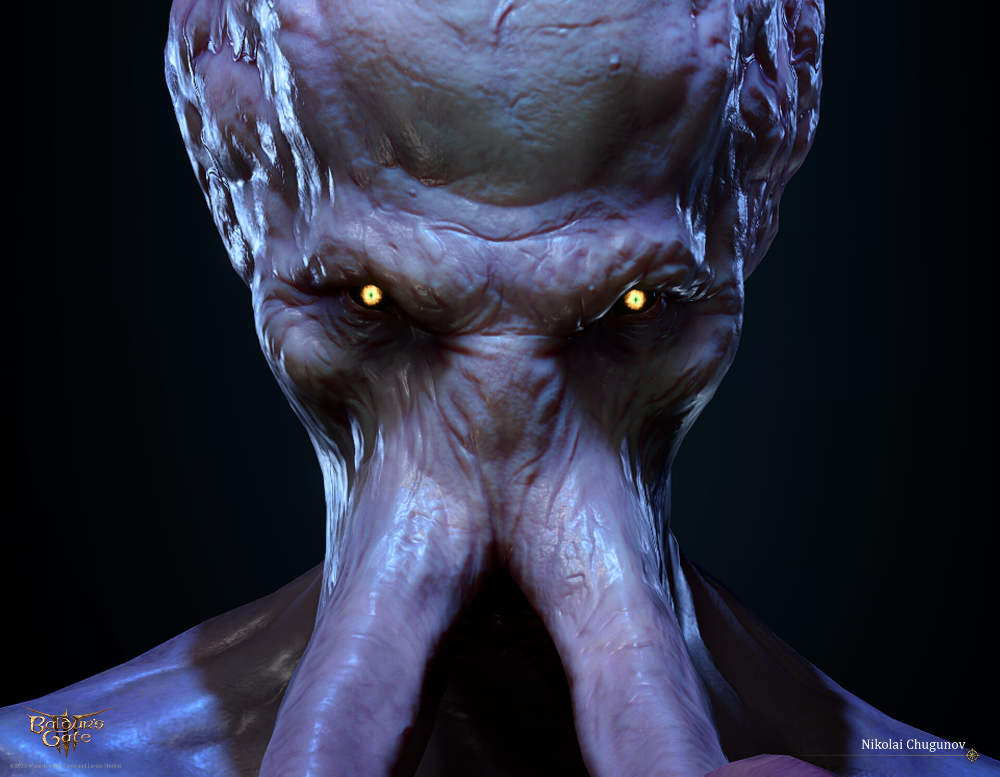

Baldur's Gate 3 é um RPG épico ambientado no universo de Dungeons & Dragons, onde você começa como um personagem capturado por illithids (devoradores de mentes), criaturas que implantam parasitas em você e em outros prisioneiros. Esses parasitas têm o potencial de transformá-lo em uma aberração controlada pelos illithids. No entanto, por razões misteriosas, a transformação não ocorre, e você descobre que o parasita pode trazer habilidades poderosas.
Lore de Baldur's Gate 3

Após escapar de uma nave dos illithids que cai em Faerûn, você se une a outros personagens que também foram infectados. Juntos, vocês embarcam em uma jornada para se livrar do parasita, enfrentando dilemas morais, forças políticas, e facções poderosas, como os Githyanki, Culto da Ordem Absoluta e demônios.
Ao longo da trama, você toma decisões que moldam o mundo, os destinos dos seus companheiros e o seu próprio futuro. O jogo mistura temas de redenção, poder, e luta contra o controle, explorando tanto as consequências de suas escolhas quanto a liberdade que o parasita oferece.